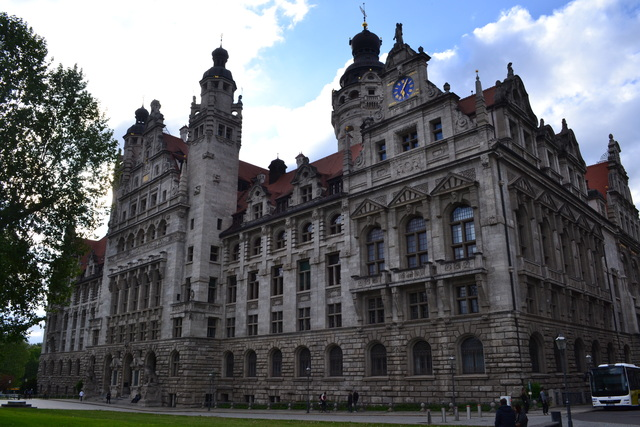
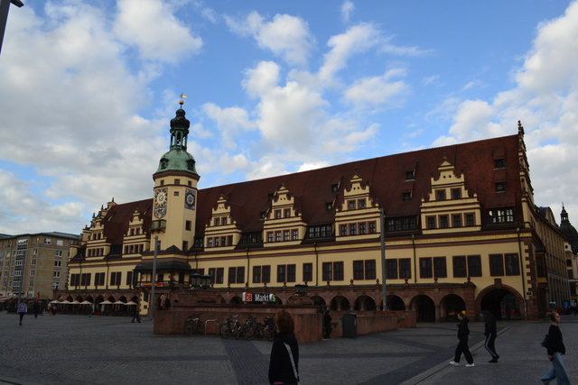
東ドイツを感じさせる重厚な石造りの建物が並びます。
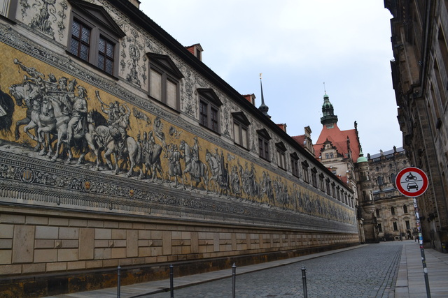
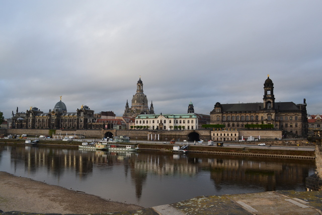
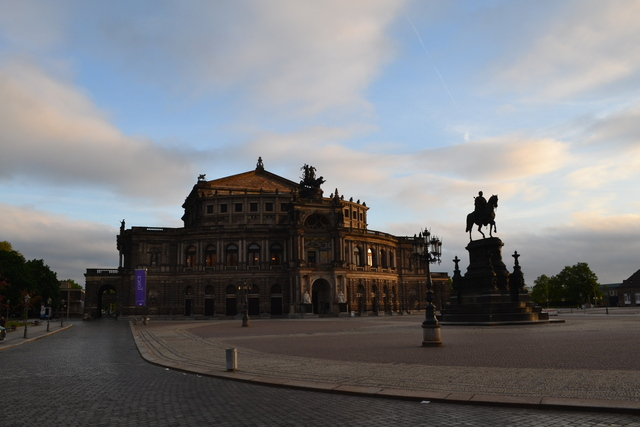
マイセン陶磁器が生まれたエルベ渓谷の街マイセン。コンパクトにまとまった可愛い街です。気温は4℃。冷涼な東ドイツはパン屋さんに並ぶライ麦パンの種類が豊かです。
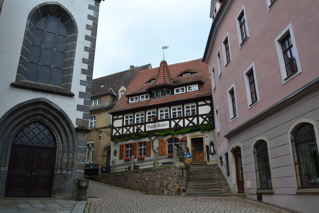
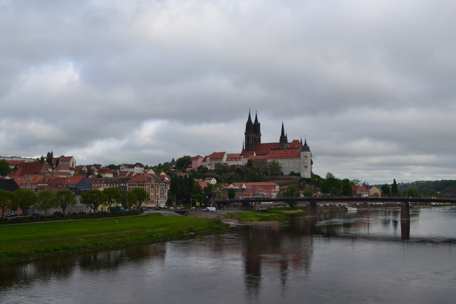
チェコ国境に近い街バウツェン。旧東ドイツに来ると建物の雰囲気がぐっと東欧っぽくなる。湾曲したシュプレー川沿いの丘に古城が並び崖の下に家々がへばりつく。ひときわ目を引くのが給水塔。水資源が豊富な日本と違って、川の水を汲み上げる給水塔が都市形成に欠かせない存在だったんでしょう。
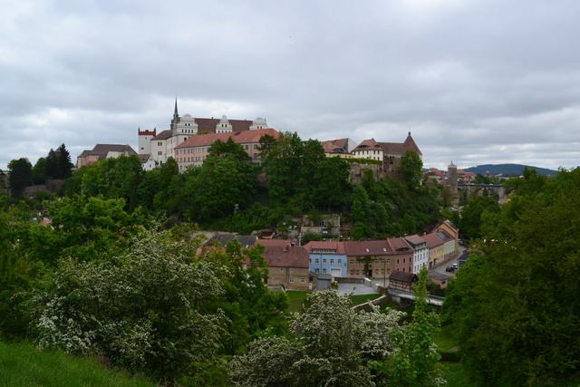
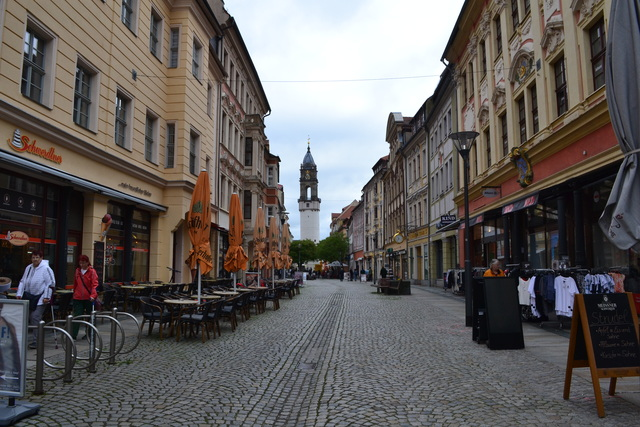
ハルツ山地の麓の街ゴスラー。ランメルスベルク鉱山の鉱山町として栄えました。中世に立てられた白黒を基調とした木組みの家々がよく保存されています。
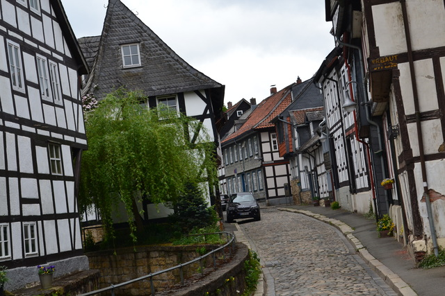
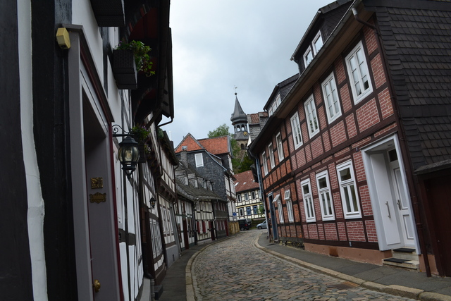
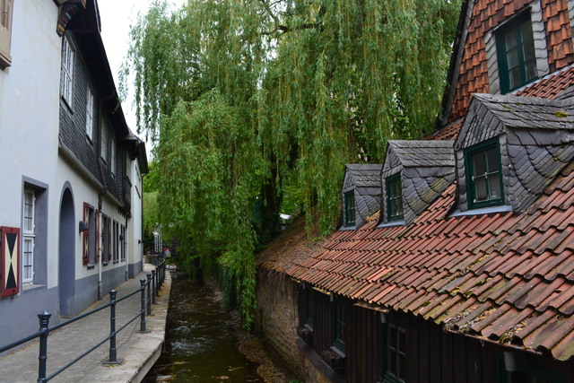
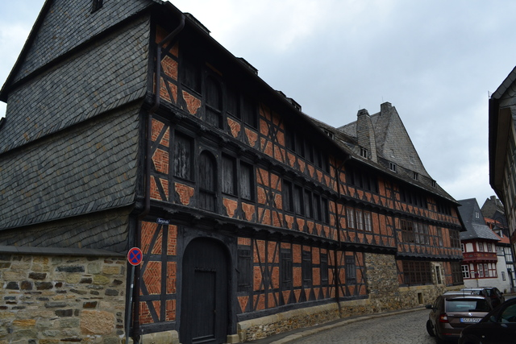
朝5時に起きて魔女伝説の残るハルツ山地の麓の街 Quedlinburg に来てみた。1300棟を超えるロマネスク様式の木組みの家々と石畳の路地。ロマネスク街道の秘都と言われる街並みは絵本に入り込んだよう。戦災を免れたので中世の姿が保存されてます。美しい風景が街のいたるところに散らばっています。主要都市から遠いのが難点ですがまた歩きに来たい街。
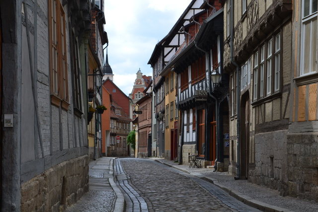
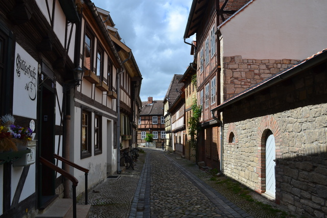
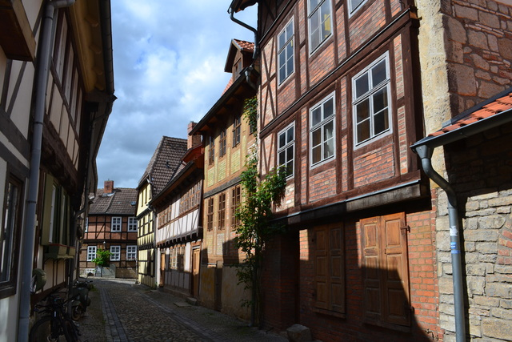
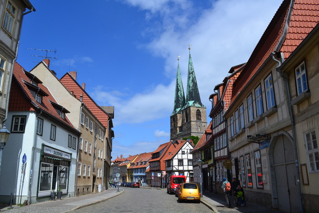
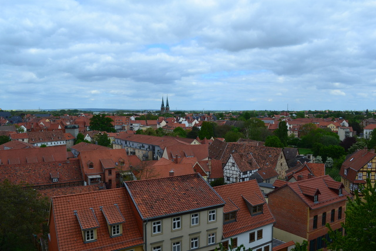
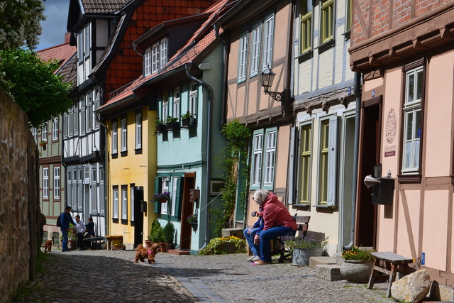
同じくハルツ山地の麓の街 Wernigerode。中世には実際に魔女狩りが行われていたらしく陰の歴史なのかと思ってましたが、ヴァルプルギスの夜に魔女祭りを盛大にやってるようですっかりご当地キャラクター化してた。信号機のマークが魔女になってて芸が細かい。
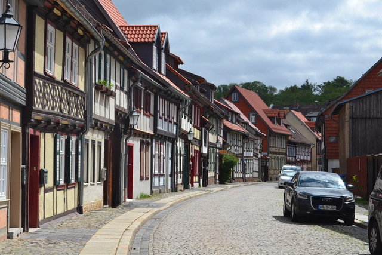
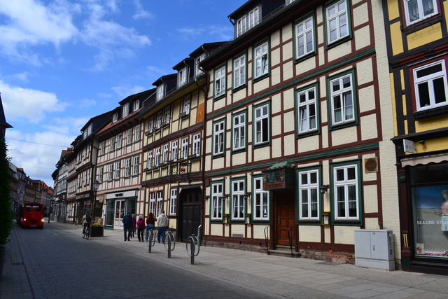
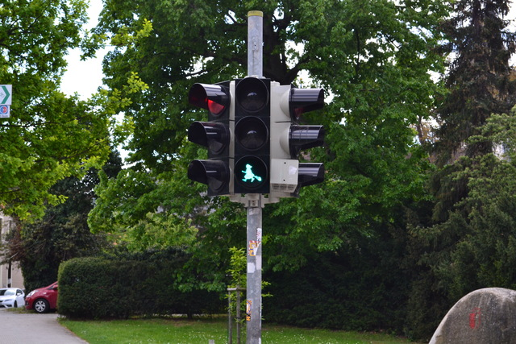
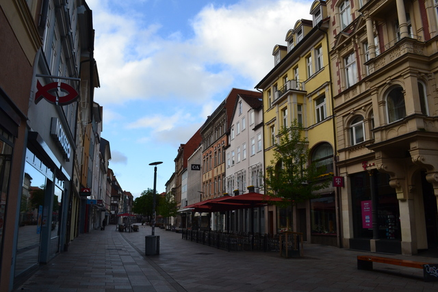